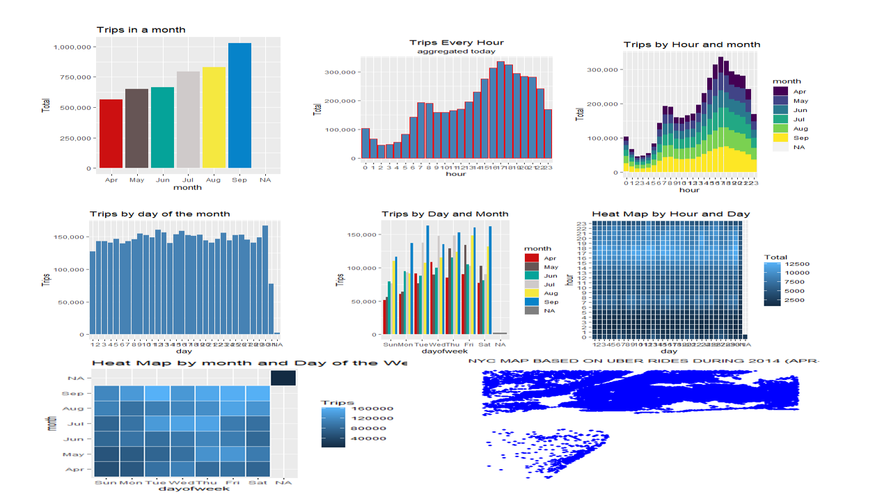

UBER DATA ANALYSIS USING R-GGPLOT

1. INTRODUCTION:
Uber has emerged as leading company in the provision of new transportation options within the
contemporary world. Uber, then, is primarily in the business of networking, and all the company's emerging
operations can be conceptualized in terms of simply providing a medium through which the relevant supply can
meet up with the relevant demand. Analytics is a tremendously growing niche that people apply in their
businesses to give it a boost.
In this R project, our objective is to analyze the Uber Pickups in New York City dataset.
This is more of a data visualization project that will guide us towards using the ggplot2 library for understanding
the data and developing an intuition to understand the customers who avail the trips.
Our main objectives are:
- Visualize Uber's growth in NYC
- Characterize the demand based on identified patterns in the time series
- Estimate the value of the NYC market for Uber.
- Other insights about the usage of the service.
- Attempt to predict the demand's growth.
2. METHOD AND MATERIAL
DATASET
The dataset contains information about Uber pickups in New York City from April 2014 to September 2014.
It has over 500k pickups (rows) and the following 4 columns:
Date/Time -The date and time of pickup.
Lat -Latitude of pickup.
Long -Longitude of pickup.
Base.
LIBRARIES USED
Ggplot2: it is the main part of the project, and it is used widely to create aesthetic visualization plots.
Ggthemes: it is a library for many themes from which the user can get the desired scale for their database.
Lubridate: it consists of time frames, and it should be in separate time categories.
Tidyr: it enables you swiftly convert between different data formats for plotting and analysis.
Dplyr: it helps for easy data manipulation.
Tidyverse: it assist with data import, tidying, manipulation, and data visualization.
DT: this provides a function datatable() to display R data via the Data Tables library.
Scales: this provides the internal scaling infrastructure used by ggplot2, and gives you tools
to override the default breaks, labels, transformations and palettes.
3. PROCEDURES:
- 1. Importing the Essential Packages.
- 2. Creating vector of colours to be implemented in our plots.
- 3. Reading the Data into their designated variables.
- 4. Plotting the trips by the hours in a day.
- 5. Plotting data by trips during every day of the month
- 6. Finding the number of Trips taking place during months in a year.
- 7. Finding the total trips in a month.
- 8. Creating a Heatmap visualization of day, hour and month
- 9. Creating a map visualization of rides in New York.
- 10. Collecting insights from all visualizations.
4. PROPOSED SYSTEM:
We proposed that we will build a data visualization project with ggplot2 using R and its libraries.
Analyse various parameters like (a) Trips by the hours in a day (b) Trips during months in a year.
At the end create visualizations for different timeframes of the year. Explain how time affects customer trips.
Customers are often dissatisfied with traditional cab companies because of their highprices and long stand
by time and hence can exploit new and big markets.
Find the days on which each basement has a greater number of active vehicles.
Can tap growing markets in suburban areas where taxi services are not available.
Estimated Time of Arrival can be reduced with increase in the number of Uber drivers which successively
will make Uber more liked by the customers and hence, the company will get more revenue and drivers will
also be profited.
Based on the data, we will find the destination people travel the most that generate high airline revenues
for travel, formed on booked trip count.
5. RESULTS
At the end of all procedure we get to see different graphs giving us unbelievable insights.
B. Trips by hours in a day

C. Trips per hour

E. Trips per day of the month

F. Trips in a month

G. HeatMap 1

H. HeatMap 2

C. Map Visualization
6. CONCLUSION
At the end of this Uber data analysis R project, we studied how to create data visualizations.
We used package ggplot2 that helped us to plot various types of visualizations that pertained to
several time-frames of the year.
With this, we conclude how time and place affected customer trips.